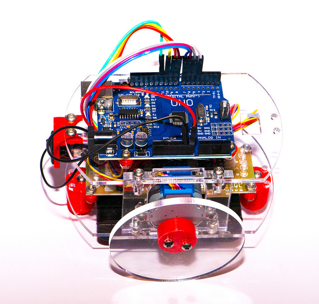

Classic Arduino Pixelbot
The original Hull Pixelbot. Powered by an Arduino Uno. Program it via a serial connection to your PC.
Make OneThe Hull Pixelbot is a little robot you can make for yourself. It has a big, bright coloured pixel on the top and although it moves very slowly, it is very precise. It is just the thing to get you working with robotics and learning about programming.
Pixelbots are interesting on their own, but if you get a bunch of robots together you can have all kinds of fun, including robot rugby, where teams program their robots to compete for bragging rights.
We have complete instructions that will tell you how to build your robot, along with designs for 3D printed or laser cut versions. Or you can grab some wheels and a chassis to make a totally brand new type.
You can program the microcontroller in your robot directly in any langauge you like, but the Hull Pixelbot also supports "Python-ish" which runs inside the robot and allows you to write code which interacts directly with the robot hardware. There are even commands you can use to make your robot happy or angry.
"Python-ish" progrms can be loaded into the robot via its serial port, or you can add a network connection to deliver code over the air.
We will be releasing more Pixelbot bits and bobs in the future; including a framework you can use to organise your own Robot Rubgy Matches.
You can use a variety of different microcontrollers. You can make a simple robot you can program from your PC using an Arduino Uno. You can add an ESP8266 device to connect your robot to WiFi or you can use an ESP32 or Raspberry Pi PICO to make a single-chipped robot.
You can get started with nothing more than a microcontroller and two stepper motors. Then you can add a pixel ring and a distance sensor. The picture shows a Pixelbot configured with a Raspberry Pi PICO.

The original Hull Pixelbot. Powered by an Arduino Uno. Program it via a serial connection to your PC.
Make One
Use the Connected Little Boxes framework to add a network connection to let you control and configure your robot over WiFi.
Make OneYou don't need to install any software on your PC or laptop to be able to program and configure your robots.
Just plug your robot into your PC and connect to your robot from your browser. There are even sample programs built into the editor you can use to kick start your robot coding.
Program your robot